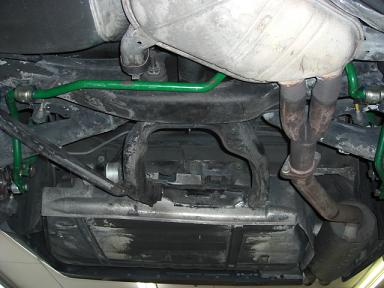 技術も根性も無いＭゴローは今回の作業は全てディーラーにお願いした。 重整備だと意外とディーラーでの整備がお得な場合もある。 状況に合せて他の整備工場と使い分けたいところだ。
|
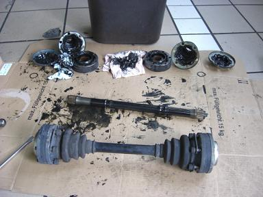 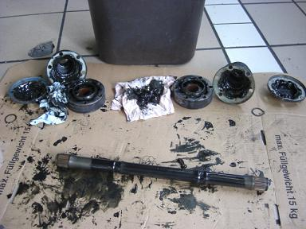 ドライブシャフトの分解の図 シャフトブーツにひび割れが起きていたのでバラすついでに作業してもらった。 ドライブシャフトを止めるボルトは再利用しない場合が多いようだ。 ちなみに、デフのサイズはデフ側フランジのボルト数で見分けることが出来る。 6本のボルトで固定されていればミディアムサイズ 8本で固定されていればラージサイズだ。
|
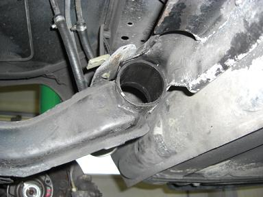 デフを固定しているブッシュを抜いたところ。デフは計3個のブッシュと１個のマウントで固定されているのだが、ブッシュは3個ともひび割れが起きていた。 ブッシュ自体は安価だが、コレだけ交換すると工賃含めて高価となる。
|
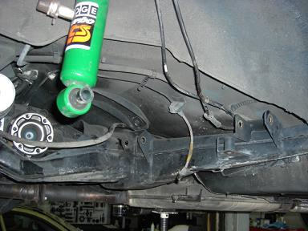 今回のメインとなるトレーリングアームブッシュの交換だ。 写真はアームを車体から切り離した図 ブッシュを抜く作業をSSTにて行う予定だったが、とても固くて抜けず・・・SSTが壊れてしまい、急遽アームを外してプレスでブッシュを抜いたそうだ。
|
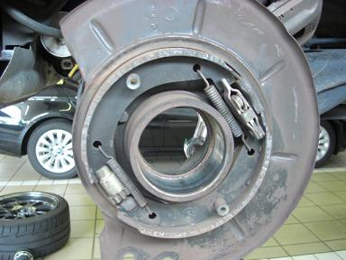 リヤのハブベアリングから音が出ていたので、こちらもついでに作業してもらった。 重く、大きいベアリングが使われていた。
|
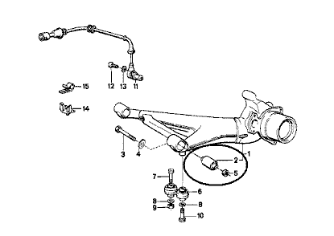 トレーリングアームブッシュはこの部分に使われている。 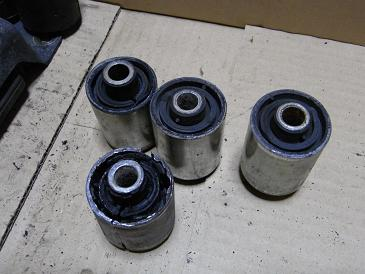 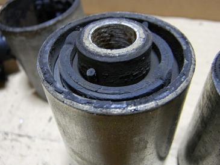 外したトレーリングアームブッシュは硬化はしていたが、ひび割れは見られなかった。 M5用のエキセントリック（偏芯）ブッシュも検討したのだが、リヤアクスルの違いにより装着できない可能性を恐れ通常のタイプをチョイスした。 エキセントリック（偏芯）ブッシュと通常ブッシュの金額は同じである。
|
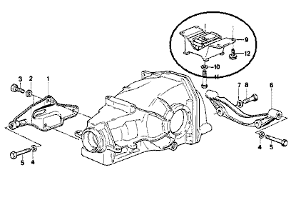 アクスルキャリアを固定しているマウントはここにある。 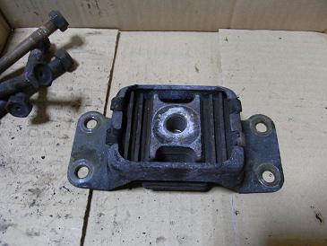 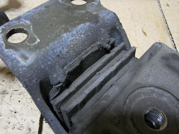 大きくしっかりとしたパーツでゴムの間に鉄板が入っている。 これもひび割れと共にゴムがプラスチックのようにカチカチに硬化していた。
|
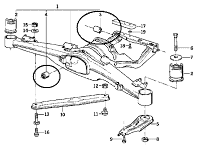 デフを支えるブッシュはココにある。アクスルの後ろに２つと前に１つだ。 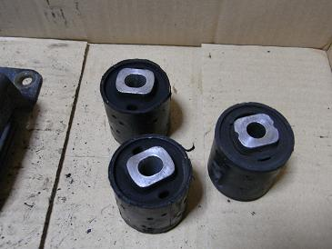 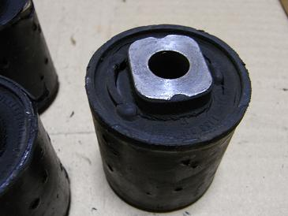 これは、3つともひび割れていた。そのうちの1つは深いところまで割れていた。 20年間あれだけの重量物を支えていれば当然だろう。 交換後の感想としては、トレーリングアームブッシュの交換による交換前との差はあまり体感できなかった。 しいて言うとすれば、凹凸を通過した時の入力の角が取れたところだろうか。これについてはトーアウトが改善されていれば良いので、後日アライメントを取る予定だ。 デフマウント、ブッシュについては十分体感できる結果となった。 シフトチェンジ時のギクシャク感が減り、フル加速からのシフトチェンジで交換前は「ドカン」と衝撃があったのだが、交換後はゴムが受け止めている「プニッ」とした感覚が分かる。まるで高級車のようである（笑 トレーリングアームブッシュの交換の必要性はあまり無いように思うが、デフマウントはAT/MTを労わる為にも交換してみる価値があるのではないかと思う。
|